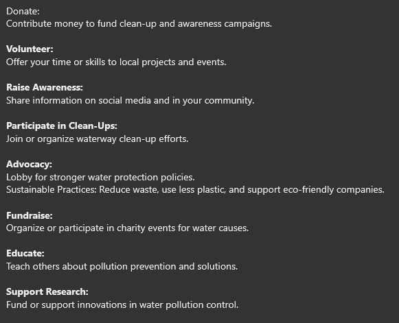

Supporting organizations that advocates for the sake of our earth does not only benefits them but also us on the longer run. The purpose of their organization is to help us live in this planet longer than what is predicted if these pollution is not prevented.
you can support organizations by doing any of the following:
